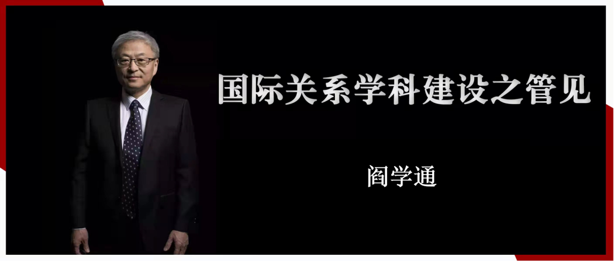

收录于合集


编者按： 2021年10月14日，清华大学国际关系研究院院长阎学通教授在《中国社会科学报》发表了《中国国际关系学科发展导向及其反思》一文，引起了学界的普遍关注。为了让大家更充分地讨论学科建设问题，故将阎教授在第十四届国际关系与政治学会议闭幕会上的发言稿予以发布。
01
中国国际关系学科的发展动力
一个学科的发展有两个动力。第一是知识的自然增长，即知识的叠加会不断形成新学科。 例如，先有牛顿的经典物理学知识，再发展出爱因斯坦的相对论天体物理学，再后来发展出了以普朗克、薛定谔、海森堡等为代表人物的量子物理力学。随着新知识的获取与增加，新学科由此诞生。知识积累的路径可以分为两种：一种是伴随着学科不断发展，细化出分支小学科，如物理与化学成为两个学科后，化学又分化出高分子、有机化学、无机化学等；文学和历史成为两个独立的学科。另一种是跨学科融合成一个新学科。例如，物理学和化学融合，形成了物化专业。 第二是人为引导成为推动新学科发展的另一动力。 人为引导也有两种：一种是由政府引导。例如，20世纪90年代将公共管理从政治学分离出来，设为一级学科；21世纪的头10年，马克思主义从原来政治学下属的二级学科分离出来，设为一级学科。除了政府引导，还有一种是学界引导。例如，围绕新时代国别区域研究推进问题，一批学界带头人、中青年骨干教师正在为国别区域研究成立一级学科而努力奋斗。在我国学界引导不是说政府不参与，而是在学科建立的前期需要学界专家们利用自身的学术视野和科学知识，在一定范围内开展高度自发性的行为，并呼唤政府相关部门早日进入到学科建设过程中，从而满足新时代中国发展的需要。
国际关系学科的发展就是受到这两种动力影响的结果。此外，一个学科的发展还离不开科学方法上的推动。
历史经验表面，只有坚持科学方法才能击败现实世界中倒退的阻力，推进学术进步。 当前人类进入了“不安的和平时代”（uneasy peace）,即没有战争但恐惧充满世界，原因是因为人们对国际政治的不确定性有了新认识。在此背景下，大数据为国际关系研究拓展新的研究路径和方法提供了更多可能。大数据研究方法的理念是，不需要知道因果原理是什么，也不用关注事物变化的不确定性有多强，而是穷尽所有数据直接到达结论层面。也就是说，在不知道原理和规律的条件下，就可以得到结果。简言之，经典物理观念被相对论超越，相对论被量子力学超越，而大数据正在超越量子力学原理。实际上，每一种科学理论都有可能增强国际关系研究的科学化水平，成为推动国际关系研究不断发展的推动力量。因此，不宜以一种观念否定另一种观念，而应以开放对心态对待科学方法，不同层面的国际问题本就可以运用不同的方法来研究。重要的是提高研究方法的可靠性。
02
对中国国际关系学科发展趋势的四个判断
中国国际关系学科发展已经显现出以下四个趋势：
第一，国际关系专业的基础性和理论性研究正在被弱化。 从2021年第十四届政治学与国际关系学术共同体年会的小组主旨讨论题目上看，有关国际关系理论、国际关系数据库建设、基础理论的讨论题目少了。从学术期刊的发行来说，现阶段，国际关系学术期刊文章的发表量增大了，但其知识创新减少了。究其原因主要是由于政策性研究多了，因为政策性文章的创新点并不是创新知识，而是政策建议解决具体问题的实用性。而基础性研究往往可以探究事务背后的机制与原理，对研究问题形成深刻的学理阐述，并对学科产生重大影响。当一个热点国际问题或亟需解决的当下问题得以解决后，那些政策建议就成了“古董”。政策性研究的学者多了，创造学术知识的学者就少了，从而导致创造出来的知识量也随之减少。
第二，反对用科学方法研究国际关系的趋势回潮。 无论是牛顿式的科学方法，还是量子力学的科学方法，还是利用大数据的科学方法，将它们借鉴过来研究国际关系都能提高本学科的科学化水平。当前，反对科学研究方法的趋势回升了。著名大学的国际关系学术杂志连续发表文章批评用科学方法研究国际关系，说科学方法有多种缺陷。科学方法肯定有缺陷，因为任何研究方法都有缺陷。然而，科学方法相比传统研究方法有两个优点，一是其缺陷比后者少，二是可以不断改进，而传统方法却无法改进。科学方法可以避免传统方法固有的许多缺陷，主要是不可靠的问题。事实上，反对用科学方法研究国际关系就是反对改进研究方法，反对国际关系研究科学化。
第三是国际关系专业的门槛不断地降低，专业教育水平下降，错误认知的市场扩大。 例如，大学招生的门槛在降低。国关专业与其他专业相比是低分录取专业。研究生招生考试的试题专业化程度下降，对本学科基本原理的考察有所减少。国关学术期刊杂志发表的政策性文章、会议发言、笔谈偏多，学理性的文章少了。国际关系教师们强调专业精神的少了，跨界发表看法的多了。事实上，以专家身份在媒体上对自己专业之外的事务发表看法，是专业不自律的表现。上述这些做法都在降低国际关系专业的门槛。
第四是以社会标准而非学术标准判断学术成就。 10万+的网评等同于SSCI文章，将网红程度视为学术地位的高低。网红是发散思维舆论市场的结果，是没有客观依据的天马行空的想象。发散思维帮助学者超越现有知识的约束，形成无限的答案或看法，然后靠收敛思维排除掉所有不合理的答案，对未排除的几个答案进行科学检验。这样的研究才属于创新。由于以社会影响取代学术标准，现在出现将发散思维说成是创新的趋势。事实是，没发散思维之后的收敛思维，那不是创新，是主观臆想。
03
对中国国际关系学研究的四个建议
中国国际关系研究已经走过几十年的发展道路。针对我国国际关系研究中出现的问题，提出以下四个建议：
第一，多研究原理，少搞政策建议。 外交政策是由国家决策者们制定的，普通人对于外交的具体情况不了解，提出的政策建议是不可能有可操作性的。学者应把精力用于研究学术问题和原理性的问题。从事学理性的研究就是研究事实，研究道理。这种研究成果生命力强，而政策研究成果事过境迁，生命力短。为了获得学术的生命力强，能找到学术乐趣，建议大家多做基础学术研究，少做政策研究。
第二，多学习不会的，少反对不懂的。 学术上反对任何事的前提是先需要知晓反对的对象是什么。反对定量分析方法的前提是需要掌握定量分析方法。现在有些人对自已看不懂的学术成果大加批判。这种看不懂就反的作法是无知的表现。看不懂有两种可能，一种是写的人错了，更多的情况是读者缺乏读懂的专业知识。研究者们需要先学习自己不会的和不懂的，这样才能提高和改善已有的知识。
第三，多追求专业的，少沉迷于时评的。 社会有分工，写国际时评是记者们的工作，国际关系专业人士不宜与记者们抢饭吃。学者的工作是研究学理性的问题、写学术文章、写著作、编教材、建数据库。然而，现在的国际关系学界里，做数据库工作的学者寥寥数位，编写教材的老师也不多。国际关系学者要有职业精神，把搞时评的精力和时间用于本职工作。
第四，多信奉学术标准，少在意网络社会标准。 以社会标准衡量指导学术发展没有好处，因为社会标准是功利性的。学术研究需要研究者享受自己的研究成果，而不是享受社会的吹捧。学术研究成果是供小圈子同行们评价的，而是不追求网民们点赞的。以学术标准检验我们的成果，学术水平就会不断提高，而以网络社会为标准，学术水平就会不断下降。
（作者系世界和平论坛秘书长、清华大学国际关系研究院院长、俄罗斯科学院外籍院士。本文由阎学通教授授权国政学人发布）
排版 | 石寒冰 彭雯昕
文章观点不代表本平台观点，本平台评译分享的文章均出于专业学习之用, 不以任何盈利为目的，内容主要呈现对原文的介绍，原文内容请通过各高校购买的数据库自行下载。